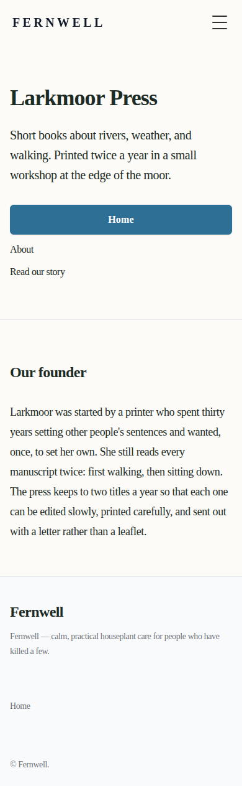
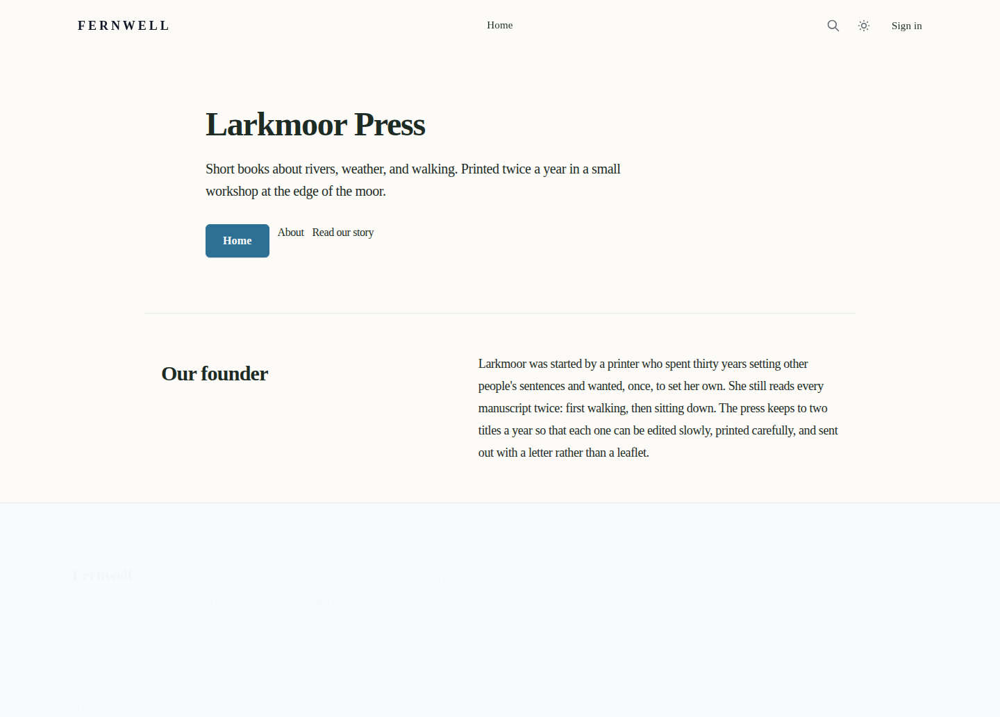
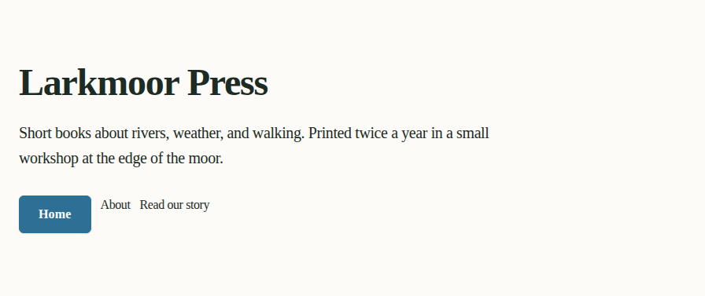
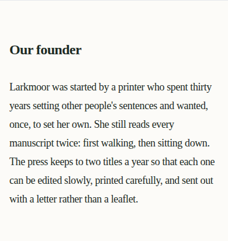
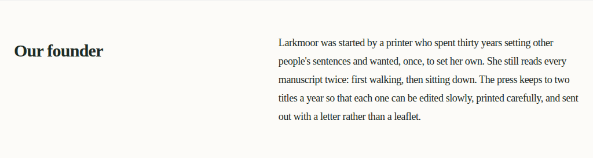
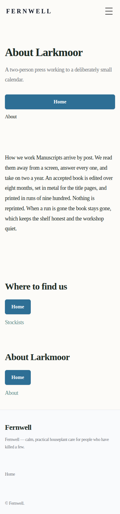
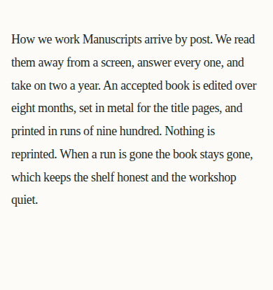

Source vs emitted draft
target project fixture-preview-target · source http://127.0.0.1:8913/
- Rubric verdict
- needs_governed_iteration
- Mapped coverage
- 75.00% against a 90.00% minimum
- Visual comparisons
- 12 scored / 4 unavailable
- Aggregate visual score
- 72.91%
- Evidence defects
- 4
- Preview mechanism
- local_astro_build_of_scratch_tenant_copy · published false · released false · deployed false
Visual evidence explains where a draft differs; it never authorizes a publish, a release, or a CSS change to chase pixels. Both sides are screenshotted at the same capture viewports and normalized onto one comparison raster before scoring.
page_7b2df291175a
source http://127.0.0.1:8913/ → preview route /__draft-preview/page_capture_448f8ebbdf0684e5bf (emitted route /)
mapped-block coverage 50.00% · 2/4 blocks
Whole page
Whole page — mobile390×844source
emitted draft
Whole page — desktop1440×1000source
emitted draft
Block by block
page_7b2df291175a_block_001 — mobilescore 40.45%candidate_6bc1b8f9c726 page_7b2df291175a_block_001 — desktopscore 32.65%candidate_6bc1b8f9c726source
emitted draft
page_7b2df291175a_block_002 — mobilescore 90.53%candidate_b1f305fc1b29emitted draft
page_7b2df291175a_block_002 — desktopscore 93.28%candidate_b1f305fc1b29emitted draft
page_7b2df291175a_block_003 — mobiledefect · draft_preview_screenshot_not_availableemitted draftnot available
page_7b2df291175a_block_003 — desktopdefect · draft_preview_screenshot_not_availablesource
emitted draftnot available
page_7b2df291175a_block_004 — mobiledefect · draft_preview_screenshot_not_availableemitted draftnot available
page_7b2df291175a_block_004 — desktopdefect · draft_preview_screenshot_not_availablesource
emitted draftnot available
page_bb79cc0333f5
source http://127.0.0.1:8913/about → preview route /__draft-preview/page_capture_c28844d41b8e03f961 (emitted route /about)
mapped-block coverage 100.00% · 4/4 blocks
Whole page
Whole page — mobile390×844source
emitted draft
Whole page — desktop1440×1000 Block by block
page_bb79cc0333f5_block_001 — mobilescore 39.96%candidate_a4be7d8a509b page_bb79cc0333f5_block_001 — desktopscore 32.16%candidate_a4be7d8a509b page_bb79cc0333f5_block_002 — mobilescore 89.48%candidate_adf4fb6ba959emitted draft
page_bb79cc0333f5_block_002 — desktopscore 94.60%candidate_adf4fb6ba959 page_bb79cc0333f5_block_003 — mobilescore 92.21%candidate_a9e64477be7e page_bb79cc0333f5_block_003 — desktopscore 95.38%candidate_a9e64477be7e page_bb79cc0333f5_block_004 — mobilescore 85.61%candidate_2381abdd97cc page_bb79cc0333f5_block_004 — desktopscore 88.58%candidate_2381abdd97cc